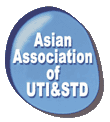

22-23 ноября 2003 в г. Фукуока (Япония) состоялась учредительная конференция Азиатской ассоциации по инфекциям мочевыводящих путей и инфекциям передающимся половым путём - Asian Association of Urinary Tract Infection and Sexually Transmitted Diseases (AAUS).
22-23 ноября 2003 в г. Фукуока, Япония состоялась учредительная конференция Азиатской ассоциации по инфекциям мочевыводящих путей и инфекциям, передающимся половым путём - Asian Association of Urinary Tract Infection and Sexually Transmitted Diseases (AAUS). В состав ассоциации вошли национальные общества урологов и специалистов в области инфекционных болезней Японии, Кореи, России и других стран. В работе конференции приняли участие ведущие специалисты Японии, Кореи, Гон-Конга, Таиланда, Сингапура, России, Германии, США.
На конференции обсуждались наиболее актуальные вопросы диагностики и терапии инфекций мочевыводящих путей (ИМП) и инфекций, передающихся половым путём.
Наиболее широко были представлены доклады, затрагивающие проблему антибиотикорезистентности. С соответствующими докладами выступили Katsumi Shigemura, Satoshi Ishlhara, Kyohito Ishikawa, Tetsuro Muratani (Япония). Доклады затрагивали вопросы чувствительности, возбудителей неосложненного цистита, осложнённых ИМП и других уропатогенов в различных регионах Юго-Восточной Азии. Большой интерес вызвали доклады по распространённости резистентных штаммов Neisseria gonorrhoeae в Японии.
С сообщением о современном состоянии чувствительности возбудителей ИМП в России выступил директор НИИ антимикробной химиотерапии (НИИАХ), профессор Л.С. Страчунский.
Кроме проблем, представляющих непосредственный интерес для клинической медицины, обсуждались вопросы, связанные с изучением особенностей патогенеза ИМП - образование микробных биоплёнок, эпидемиология факторов вирулентности и резистентности бактерий.
Во время конференции состоялось заседание исполнительного комитета ассоциации, где президентом ассоциации избран Tetsuro Matsumoto (Япония), а вице-президентом Yong-Hyun Cho (Корея). Учитывая географическое расположение России, в правление общества, наряду с японскими, корейскими и китайскими учеными были избраны представители России: почетным членом ассоциации - директор НИИ урологии МЗРФ академик Н.А. Лопаткин, членом исполнительного комитета директор НИИАХ, профессор Л.С. Страчунский, секретарём - зам. директора НИИАХ В.В. Рафальский.
Одним из мероприятий, запланированных AAUS, совместно с Межрегиональной ассоциацией по клинической микробиологии и антимикробной химиотерапии (МАКМАХ), Российским научным обществом урологов, НИИАХ, НИИ урологии МЗРФ, будет международная конференция «Современная фармакотерапия в урологии». Конференция состоится 20-21 мая 2004 г. в г. Хабаровске.
Фотографии